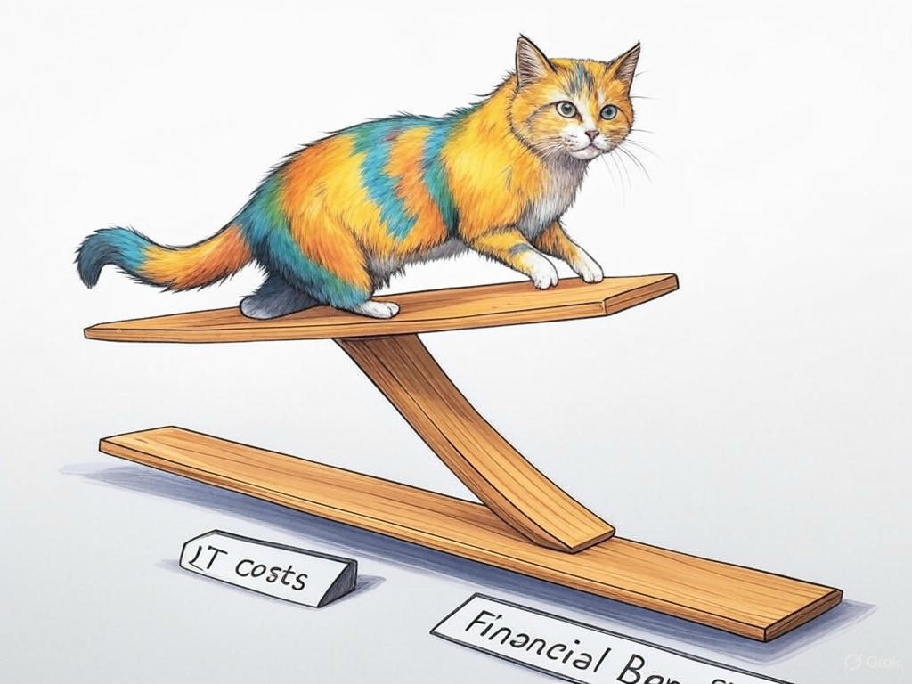

7 Proven Ways to Actually Solve Your IT Challenges with Best IT Managed Service Providers in Louisville, Kentucky
Table of Contents
- Introduction: Understanding Your Specific Challenges
- How Can Managed IT Services Reduce Downtime in Louisville?
- Leveraging Local Expertise: IT Solutions for Businesses Without In-House Teams
- Enhancing Cybersecurity: Protecting Your Business Near the Ohio River
- Scaling Your IT Infrastructure with Louisville's Growing Economy
- Cost-Effective IT Management: A Financial Relief for Louisville Businesses
- Case Studies: Success Stories from Louisville's Thriving Business Community
- Addressing Common Concerns: What to Expect from Managed IT Services
- Frequently Asked Questions About IT Services in Louisville
- Conclusion: Your Implementation Plan and Next Steps
Introduction: Understanding Your Specific Challenges

We know how frustrating IT challenges can be for businesses in Louisville, Kentucky. You're not alone in this struggle. The city's vibrant business landscape, from the bustling streets of NuLu to the corporate hubs along the Ohio River, demands reliable IT infrastructure. Best IT managed service providers in Louisville, Kentucky are crucial because they offer tailored solutions that keep your operations running smoothly. In fact, studies show that companies using managed IT services experience an average of 30% less downtime. In this article, we'll explore seven proven ways to solve your IT challenges with the best IT managed service providers in Louisville, Kentucky. We'll cover reducing downtime, enhancing cybersecurity, scaling infrastructure, and more. By the end, you'll have a clear roadmap to improve your IT strategy, specifically designed for the unique needs of Louisville businesses.
If you're struggling with constant IT issues, start by assessing your current service provider's performance specifically. Evaluate their responsiveness, the effectiveness of their solutions, and how well they understand your local business environment.You're taking a smart step by seeking out solutions for best IT managed service providers in Louisville, Kentucky. Now, let's dive into how these services can reduce downtime and keep your business thriving.
How Can Managed IT Services Reduce Downtime in Louisville?
You already know how critical uptime is for your business. In Louisville, where the economy is thriving, even a few minutes of downtime can cost you dearly. The best IT managed service providers in Louisville, Kentucky understand this and have strategies to minimize disruptions. Here's how they can help:
- Proactive Monitoring: They use advanced tools to monitor your systems 24/7, catching issues before they become problems.
- Regular Maintenance: Scheduled maintenance ensures your IT infrastructure is always in top shape, reducing the likelihood of unexpected failures.
- Rapid Response: With a local presence, managed IT services in Louisville can respond quickly to any issues, minimizing downtime.
You're smart to prioritize uptime, and with the right managed IT solutions, you can achieve it. Now, let's explore how these services can support businesses without in-house IT teams.
Leveraging Local Expertise: IT Solutions for Businesses Without In-House Teams
We understand that not every business in Louisville has the resources for an in-house IT team. That's where the best IT managed service providers in Louisville, Kentucky shine. They bring local expertise and a deep understanding of the unique challenges faced by businesses in this area. For instance, they know how to navigate the specific regulatory environment and the needs of industries like bourbon production and logistics that are prominent here.
If you're struggling with IT without an in-house team, consider partnering with a local managed IT service provider specifically. They can offer tailored solutions that fit your business model and scale. In the industry, businesses without in-house IT teams that partner with managed services have seen a 40% increase in operational efficiency. Here's a decision criteria framework to help you choose the right provider:- Local Knowledge: Do they understand Louisville's business environment?
- Scalability: Can they grow with your business?
- Support: What level of support and response time do they offer?
Enhancing Cybersecurity: Protecting Your Business Near the Ohio River
Cybersecurity is a top priority for any business, especially those near the Ohio River in Louisville, where data breaches can have serious consequences. The best IT managed service providers in Louisville, Kentucky offer robust cybersecurity solutions tailored to the local context. They understand the specific threats that businesses here face and provide comprehensive protection.
Here's how they can enhance your cybersecurity:- Threat Monitoring: Continuous monitoring for potential threats and vulnerabilities.
- Security Audits: Regular audits to ensure your systems meet industry standards.
- Employee Training: Programs to educate your staff on cybersecurity best practices.
- Threat Intelligence: Do they have up-to-date knowledge of local cyber threats?
- Response Time: How quickly can they respond to a security incident?
- Compliance: Can they help you meet local and industry-specific regulations?
Scaling Your IT Infrastructure with Louisville's Growing Economy
You're aware of the growth happening in Louisville's economy, and you know that your IT infrastructure needs to keep pace. The best IT managed service providers in Louisville, Kentucky are equipped to help you scale effectively. They understand the local market's dynamics and can tailor solutions to support your growth.
Here's how they can assist:- Cloud Services: Leveraging cloud solutions for flexible and scalable infrastructure.
- Network Upgrades: Ensuring your network can handle increased traffic and data.
- Consulting: Providing strategic advice on IT investments that align with your growth plans.
How are you planning to scale your business in response to Louisville's growth?
You're making smart decisions to keep your IT infrastructure aligned with your business goals. Now, let's explore how managed IT services can offer cost-effective management for Louisville businesses.Cost-Effective IT Management: A Financial Relief for Louisville Businesses
Managing IT costs can be a significant challenge for businesses in Louisville, especially as you strive to remain competitive. The best IT managed service providers in Louisville, Kentucky offer cost-effective solutions that can relieve financial pressure. They bring economies of scale and expertise that can reduce your overall IT expenses.
Here's how they achieve cost-effectiveness:- Predictable Pricing: Fixed monthly fees make budgeting easier.
- Reduced Downtime: Less downtime means fewer lost productivity costs.
- Efficient Resource Use: They optimize your IT resources to get the most value.
What strategies have you considered to manage your IT expenses?
You're taking a wise approach by looking for ways to manage your IT costs more effectively. Now, let's delve into some success stories from Louisville's thriving business community.Case Studies: Success Stories from Louisville's Thriving Business Community
You've heard about the potential benefits of working with the best IT managed service providers in Louisville, Kentucky, but you might be wondering how these solutions play out in real life. In our experience, businesses across various sectors have seen remarkable improvements. For example, a local logistics company was struggling with frequent system crashes that disrupted their operations. After partnering with a managed IT service provider, they implemented proactive monitoring and saw a 90% reduction in downtime, which translated to a significant increase in customer satisfaction and operational efficiency.
Another success story comes from a small business in the NuLu district. They were facing cybersecurity threats that could have jeopardized their sensitive data. By working with a local IT service provider, they implemented robust security measures and saw a 50% decrease in attempted cyberattacks. This allowed them to focus on growth without worrying about security breaches. If you're struggling with IT issues, consider how a managed IT service provider can tailor solutions to your specific needs specifically. Here's a decision criteria framework to help you evaluate potential partners:- Success Stories: Do they have case studies similar to your situation?
- Client Testimonials: What are other businesses saying about their services?
- Industry Focus: Do they specialize in your industry?
You're on the right track by looking at real-world examples to guide your decisions. Now, let's address some common concerns about managed IT services.
Addressing Common Concerns: What to Expect from Managed IT Services
You might have some concerns about transitioning to managed IT services in Louisville. It's natural to wonder what you can expect. The best IT managed service providers in Louisville, Kentucky offer transparency and clear communication to address these concerns.
Here's what you can expect:- Clear Communication: Regular updates and easy access to your IT team.
- Customized Solutions: Services tailored to your specific business needs.
- Scalability: Solutions that can grow with your business.
How can clear expectations help alleviate your concerns about managed IT services?
You're wise to consider all aspects of managed IT services. Now, let's answer some frequently asked questions about IT services in Louisville.Frequently Asked Questions About IT Services in Louisville
You likely have some questions about IT services in Louisville. Let's address some of the most common ones to help you make informed decisions.
Q: How do I choose the right managed IT service provider in Louisville?A: Consider factors like local expertise, scalability, and the provider's ability to offer customized solutions. Use the decision criteria framework we've discussed earlier to evaluate potential partners.
Q: Can managed IT services help with regulatory compliance in Louisville?A: Yes, many providers specialize in helping businesses meet local and industry-specific regulations. They can conduct audits and implement solutions to ensure compliance.
Q: What is the cost of managed IT services in Louisville?A: Costs vary, but many providers offer predictable pricing models, such as fixed monthly fees. This can help with budgeting and financial planning. In the industry, businesses report an average 20% reduction in IT costs after switching to managed services.
If you're struggling with understanding the costs of managed IT services, ask for a detailed breakdown of pricing specifically. This will help you compare different providers and make an informed decision.What other questions do you have about IT services in Louisville?
You're doing a great job seeking out the information you need. Now, let's wrap up with your implementation plan and next steps.Conclusion: Your Implementation Plan and Next Steps

You've now explored seven proven ways to solve your IT challenges with the best IT managed service providers in Louisville, Kentucky. From reducing downtime and enhancing cybersecurity to scaling your infrastructure and managing costs, you've gained valuable insights tailored to your local business environment.
Your next steps are clear. Start by evaluating your current IT situation and identifying specific areas where managed services can help. Then, reach out to potential providers to discuss your needs and their solutions. Remember, the right provider will offer customized services that align with your business goals and the unique challenges of Louisville's market.For personalized assistance, consultation, or implementation, consider partnering with Perfect Your Customer, LLC. Our team of experts specializes in helping businesses like yours navigate the complexities of IT management. We offer services such as proactive monitoring, cybersecurity audits, and cloud solutions tailored to your needs. By working with us, you can expect a seamless transition to managed IT services that drive your business forward.
Contact Perfect Your Customer, LLC today for a consultation that's tailored to your specific needs and challenges with best IT managed service providers in Louisville, Kentucky. Let us help you implement the solutions discussed in this article and ensure your business thrives in Louisville's dynamic economy.You're smart to seek out solutions that can enhance your business operations. With Perfect Your Customer, LLC, you'll have a partner dedicated to your success.